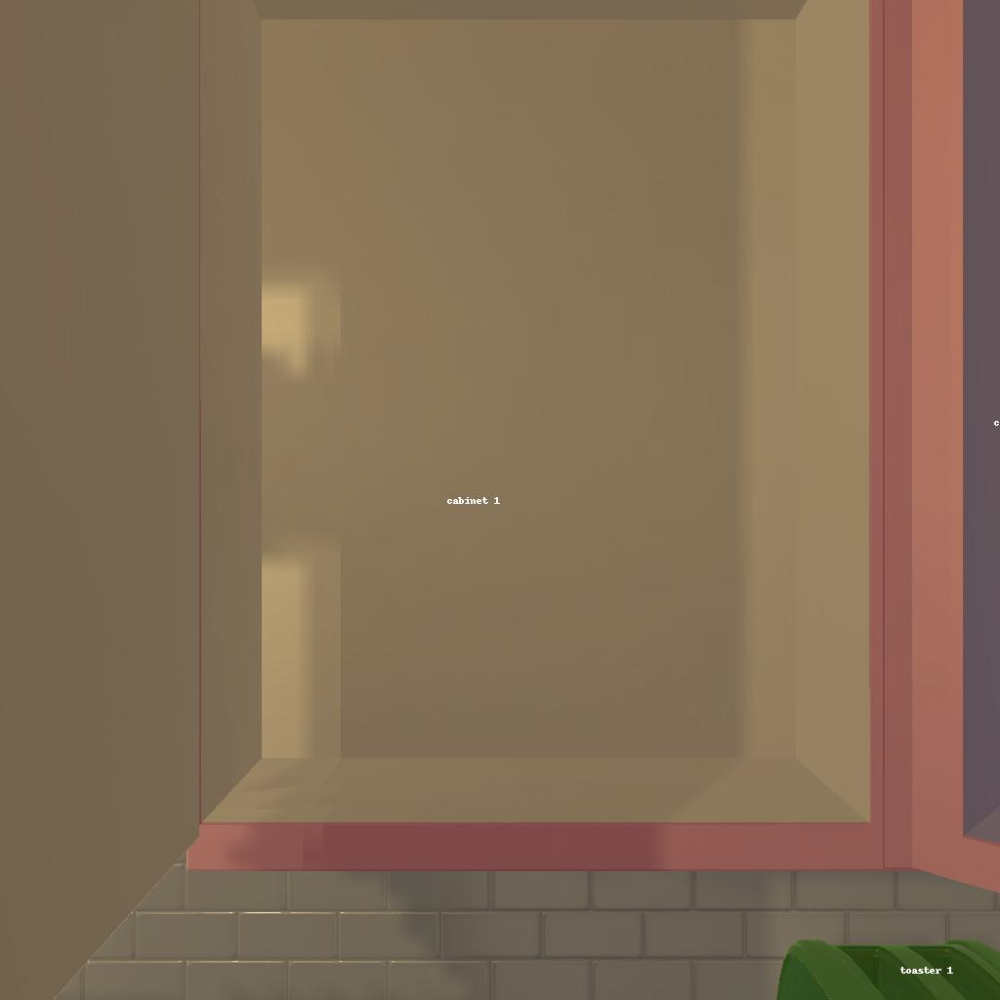

---------------------------------------------------------task: 10---------------------------------------------------------
--------------------------------------------------------------------------------------------------------------------------------------------------------------------
--------------------------------------------------------------------------------------------------------------------------------------------------------------------
Step:--------------------------------------------------------------------------12-------------------------------------------------------------------------------
----------------------------------------
VLM Prompt:
Image1:
Image2:
Image3:
**Instruction**
1. Analyze the provided image to identify all visible household objects, focusing on those relevant to the task description "clean some plate and put it in countertop."
2. Use the analysis of the image and the task hint "The agent must find an object of the desired type, pick it up, go to a sink or a basin, clean the object with a sink or basin, and then find the correct location to place it and put it down there. The agent does not need to use soap bottle or faucet to clean the object, and the agent just needs to do action that is "clean the object with the sink or sink basin"." to answer the question: what is the most reasonable action in the choices for the task description "clean some plate and put it in countertop"?
4. Decide and write the answer using the template: The answer is: (i): , where i is the real number. If there is no desired object in the image, search every place based on **Initial Observation** to find the object. And if no one is exactly correct, choose a similar answer.
**Initial Observation**
You are in the middle of a room. Looking quickly around you, you can see cabinet (1-20), toaster (1), microwave (1), garbagecan (1), countertop (1-2), drawer (1-4), stoveburner (1-4), sinkbasin (1), sink (1), fridge (1), diningtable (1), coffeemachine (1)
**Answer Choices**
(1): go to cabinet 2
(2): go to toaster 1
(3): go to cabinet 4
(4): go to cabinet 5
(5): go to microwave 1
(6): go to garbagecan 1
(7): go to countertop 1
(8): go to drawer 1
(9): go to cabinet 6
(10): go to cabinet 7
(11): go to drawer 2
(12): go to stoveburner 1
(13): go to stoveburner 2
(14): go to countertop 2
(15): go to cabinet 8
(16): go to cabinet 9
(17): go to cabinet 10
(18): go to drawer 3
(19): go to drawer 4
(20): go to stoveburner 3
(21): go to stoveburner 4
(22): go to cabinet 11
(23): go to cabinet 12
(24): go to cabinet 13
(25): go to cabinet 14
(26): go to sinkbasin 1
(27): go to sink 1
(28): go to cabinet 15
(29): go to fridge 1
(30): go to cabinet 16
(31): go to cabinet 17
(32): go to cabinet 18
(33): go to cabinet 19
(34): go to diningtable 1
(35): go to coffeemachine 1
(36): go to cabinet 20
(37): close cabinet 1
(38): take nothing from cabinet 1
(39): examine cabinet 1
**Answer**
Let's think step by step by following the instructions.
----------------------------------------
----------------------------------------
Original Response:
Firstly, the task is to "clean some plate and put it in countertop." To accomplish this, we would need to find a plate, clean it, and then place it on the countertop.
From the Initial Observation, we know there are multiple cabinets (1-20), a toaster, a microwave, a garbage can, countertops, drawers, stove burners, a sink basin, a sink, a fridge, a dining table, and a coffee machine in the room.
The image provided shows cabinet 1, but there is no indication of any plates inside, and the image does not show any other objects or areas of the room.
Given the task description and the hint provided, it is reasonable to assume that the first step would be to find a plate, which would likely be located in a cabinet. However, since cabinet 1 is empty, we would need to look for plates in another cabinet.
The answer is not to go to the toaster, microwave, garbage can, drawer, stove burner, sink basin, fridge, dining table, coffee machine, or to close, take nothing from, or examine cabinet 1, as these actions do not directly pertain to finding a plate.
Therefore, the most reasonable action from the choices provided is to look for a plate in another cabinet. Since cabinet 1 is empty, we can move on to the next available cabinet numbers in the answer choices.
The answer is: (3): go to cabinet 4
----------------------------------------
----------------------------------------
>>> Refine Original VLM Response and Get Pure Action: go to cabinet 4
----------------------------------------
-----------------------------------------------------------------
Running time: 16.403125286102295 seconds
Total Money: 6.060800000000001
-----------------------------------------------------------------
-----------------------------------------------------------------
Text Observation:You arrive at loc 4. The cabinet 4 is closed.
-----------------------------------------------------------------
UNSUCCEED